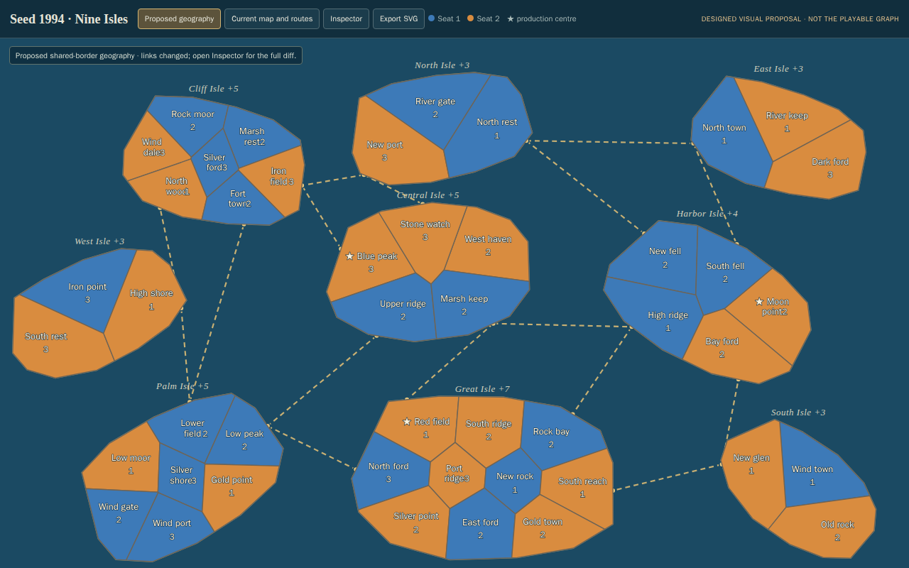
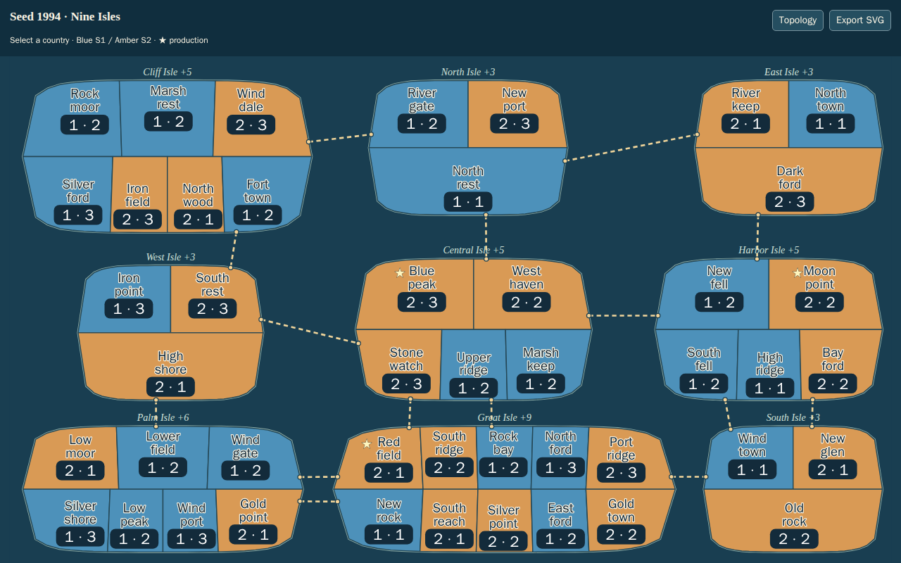
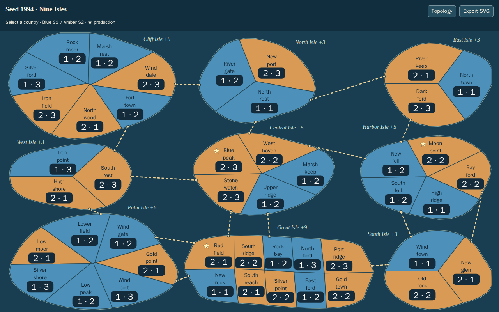
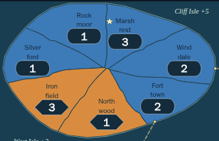
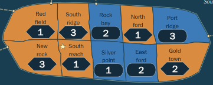

Opening


Quieter labels and army badges · direct and repeated attacks · geographical islands and coastlines · shared region borders.
Double-click START-MALPACO.cmd in this directory, then open the standalone game. See launch instructions.
Fixed Nine Isles reference board. These views support your appearance/pacing decision; T33 is awaiting your approval.


Open the approved #66 / T22 G reference. Gameplay graph and saves remain current; visual geometry follows its geographical direction.




